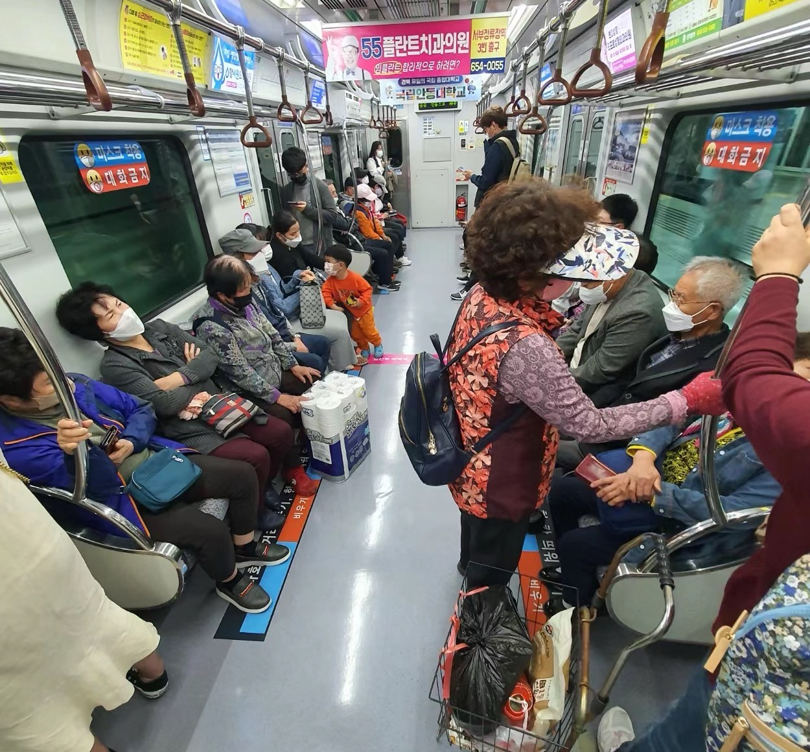
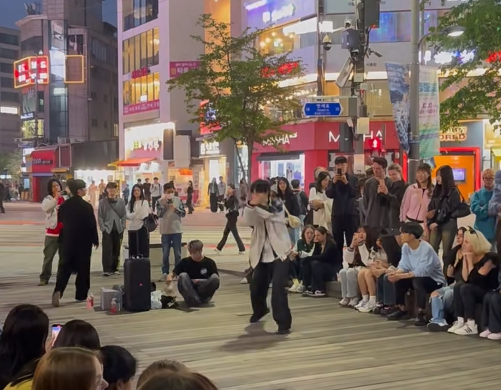
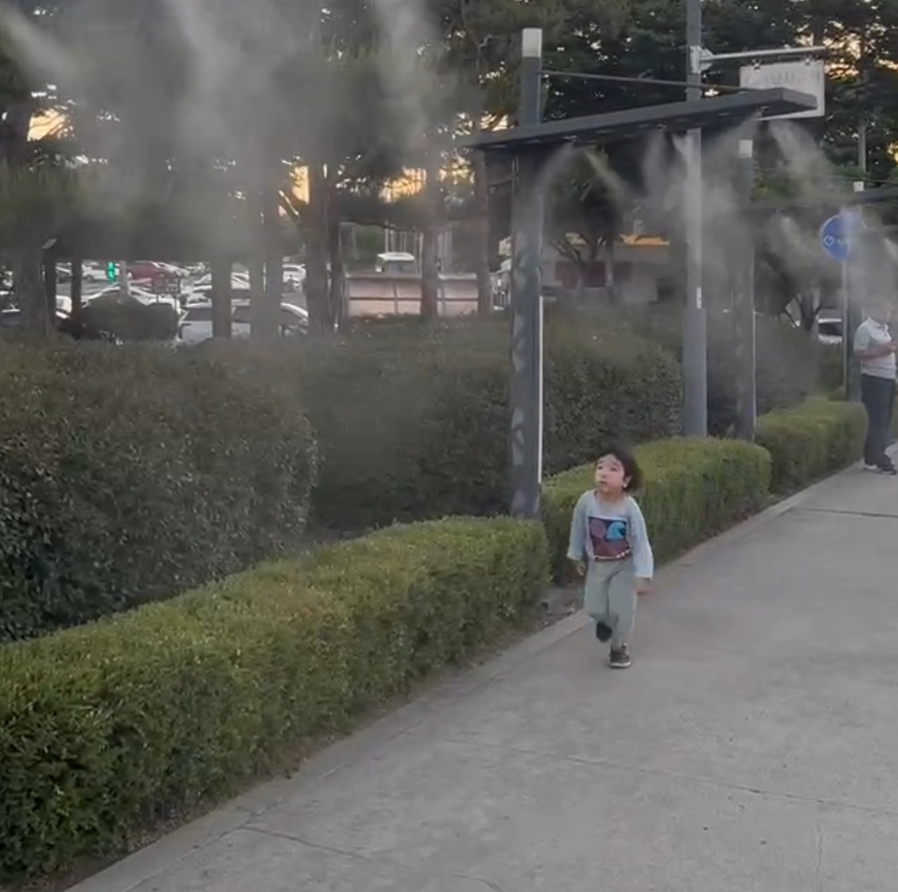
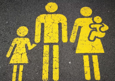
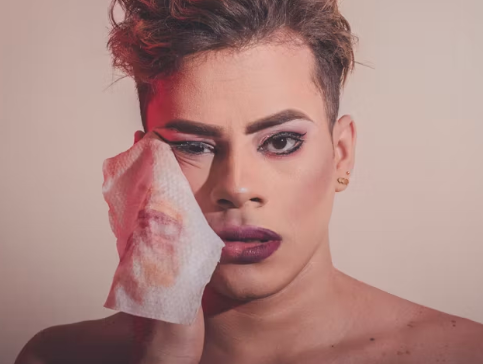
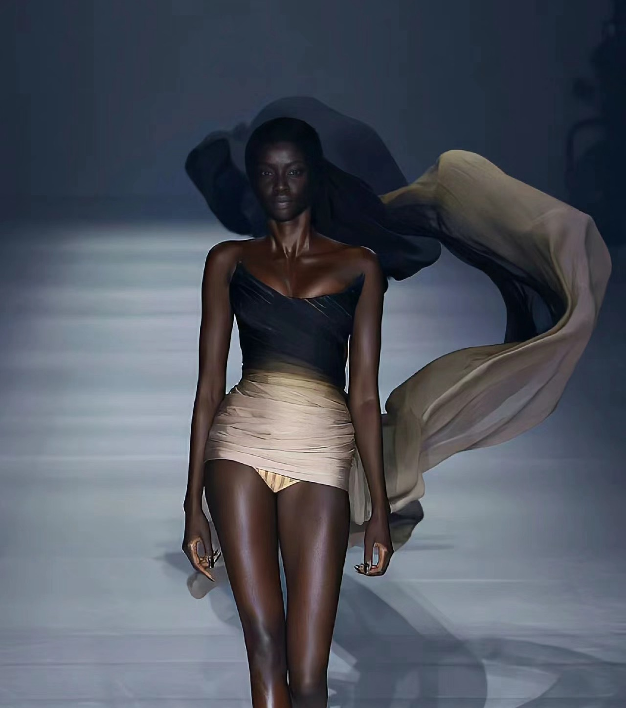
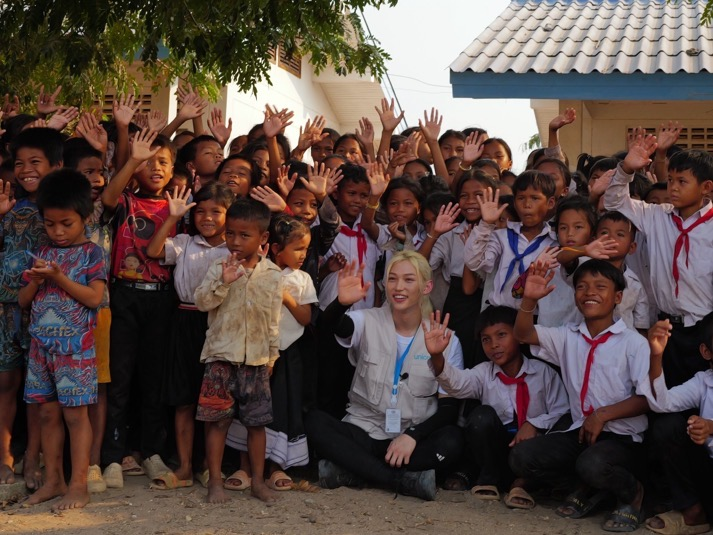

지하철에서 노인들의 가시성은 주류의 아름다움의 기준에 대항하는 행위로 볼 수 있다.이들의 존재와 활동을 과시함으로써 노인들은 아름다움이 젊음과 외모에만 국한되지 않는다는 점을 강조하며, 지하철과 같은 공공장소에서 노인들의 활약은 신체 건강과 피트니스에 대한 관심을 반영한다.공공공간에서 활동적인 노인을 전시함으로써 사회는 노인의 건강수요와 건강기회에 더욱 관심을 기울이고 노인건강정책의 발전을 촉진할 수 있다.

뷰티 표준 뒤에는 막대한 상업적 이익이 있으며 뷰티 및 화장품 산업은 이러한 표준을 홍보하여 제품 판매를 촉진하여 젊은이들의 소비 행동과 사회적 인식에 영향을 미칩니다.노인에 비해 젊은이들은 활력이 넘치고 신체도 적극적이어서 사회도 활력이 넘칩니다.

공원 어린이들은 젊은이들과 달리 활발하고 더 단순하며 순진하며, 공원 어린이들의 이미지를 정치적 관점에서 분석함으로써 사회의 아름다움의 기준과 긍정적인 신체 현상 뒤에 숨겨진 권력 역학 및 사회적 의미를 드러낼 수 있습니다.이러한 현상은 아동의 건강과 행복에 대한 사회적 관심을 보여줄 뿐만 아니라 아동의 성장 환경을 조성하는 데 있어 공공 정책 및 지역사회 지원의 역할을 반영합니다.

아이를 안고 있는 엄마의 모습은 종종 여성의 부드러움, 사랑, 모성을 표현하는 데 사용됩니다.이것은 주요 보살핌과 정서적 지지자로서의 여성의 역할을 강화하며, 또한 가정에서 여성의 주요 책임이 전통적인 가족 분업 개념을 반영하는 자녀 돌봄과 가족 문제임을 암시할 수 있으며, 일반적으로 보호, 지도 및 권위의 의미를 전달합니다.이것은 남성이 가족의 리더이자 외부 문제의 주요 책임자로서 사회에 대한 기대와 일치합니다.

짙은 화장을 한 남성은 남성과 여성의 전통적인 역할 분담에 도전했고, 성평등과 다양성에 대한 논의를 이끌었습니다.이러한 이미지의 사회적 수용은 성별 다양성에 대한 사회의 관용과 개방성을 반영합니다.이러한 이미지에 대한 수용 여부는 사회 내부의 권력 동태와 문화적 태도를 드러냅니다.
이러한 시나리오는 권력구조의 변화를 반영하고 의사결정 과정에 남녀가 평등하게 참여함으로써 정치, 경제, 사회 분야에서 성평등의 발전을 상징합니다.이러한 이미지는 더 많은 여성들이 리더쉽과 의사 결정의 역할을 추구하도록 격려하는 동시에 성평등의 중요성과 가능성을 각계각층에 인식하도록 교육합니다.
영화에서 백인 배우가 비백인 역할을 맡는 것은 글로벌 미디어에서 백인 문화의 패권을 반영하고 백인 우월론을 강화한 것.이러한 관행은 시청자의 문화와 역사에 대한 이해에 영향을 미칠 뿐만 아니라 인종 불평등을 악화시킵니다.비백인 배우의 취업 기회를 박탈해 엔터테인먼트 업계의 인종 불평등을 더욱 심화시켰습니다.
피부색이 다른 협력자가 함께 있는 사진을 보여주는 것은 다양성과 포용성에 전념하고 있음을 보여줍니다.이러한 관행은 전통적으로 백인이 주도하는 광고 및 미디어 이미지에 도전하고 다양성 대표성에 대한 사회적 요구를 반영합니다.이 이미지에서 다양한 얼굴은 인종과 문화의 경계를 허물고 관객이 더 다양한 사회적 현실과 시장 요구를 느낄 수 있도록 합니다.

이 흑인 모델 지도가 대중의 시각으로 향하는 현상은 사회와 문화적 배경에서 이러한 이미지의 복잡성을 더 깊이 이해하고 그 뒤에 숨겨진 권력 구조와 사회 현상을 드러낼 수 있습니다.이런 분석은 현재의 인종 불평등의 현주소를 드러내는데 도움이 될 뿐만 아니라, 인종 평등과 사회 정의에 대한 진일보한 토론과 실천을 촉진할 수 있습니다.

아이돌이 봉사활동으로 아프리카 어린이들을 돕는 마지막 사진입니다.세계화를 배경으로 한 문화교류와 사회협력을 반영합니다.이러한 다문화 상호 작용은 서로 다른 문화 간의 이해와 우의를 증진시키고, 글로벌 사회의 공동 발전을 촉진하는 데 도움이 됩니다.